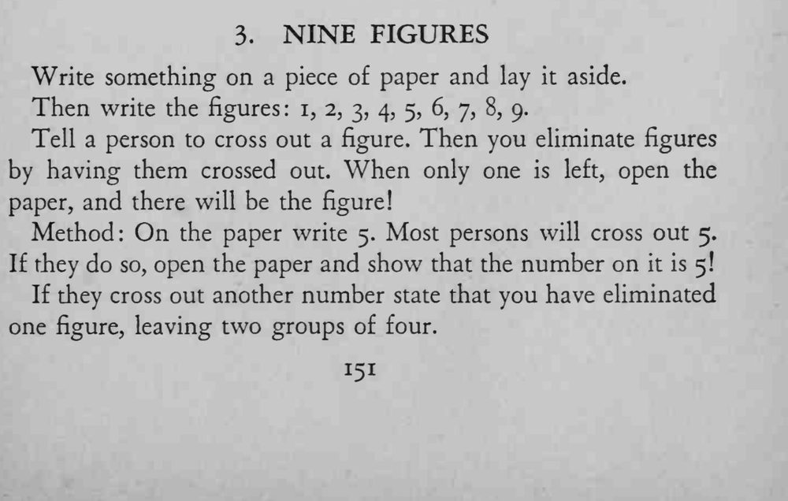
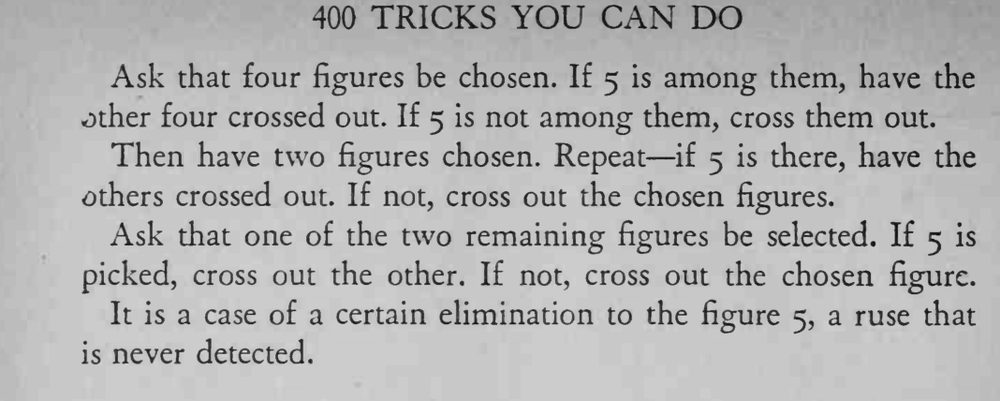

写下 1 到 9 九个数字，观众不断划掉数字，最后只剩一个，正是你纸上预言的那个数。
每一轮划掉哪组，都以 5 在不在其中来决定，语气要自然。


Write something on a piece of paper and lay it aside. Then write the figures: 1, 2, 3, 4, 5, 6, 7, 8, 9. Tell a person to cross out a figure. Then you eliminate figures by having them crossed out. When only one is left, open the paper, and there will be the figure! Method: On the paper write 5. Most persons will cross out 5. If they do so, open the paper and show that the number on it is 5! If they cross out another number state that you have eliminated one figure, leaving two groups of four. Ask that four figures be chosen. If 5 is among them, have the other four crossed out. If 5 is not among them, cross them out. Then have two figures chosen. Repeat if 5 is there, have the others crossed out. If not, cross out the chosen figures. Ask that one of the two remaining figures be selected. If 5 is picked, cross out the other. If not, cross out the chosen figure. It is a case of a certain elimination to the figure 5, a ruse that is never detected.